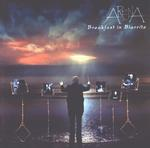

| Artist: | Arena |
| Title: | Breakfast In Biarritz |
| Label: | Verglas VGCD021 |
| Length(s): | +14 minutes |
| Year(s) of release: | 2001 |
| Month of review: | [07/2001] |
| 1) | Moviedrome | 21.57 |
| 2) | Crack In The Ice | 4.25 |
| 3) | Double Vision | 4.27 |
| 4) | Midas Vision | 5.16 |
| 5) | Serenity | 2.01 |
| 6) | The Butterfly Man | 9.44 |
| 7) | The Hanging Tree | 8.26 |
| 8) | A State Of Grace | 3.10 |
| 9) | Enemy Without | 4.53 |
| 10) | Crying For Help VII | 5.11 |
Disc 2:
| 1) | Chosen | 6.33 |
| 2) | Elea | 2.37 |
| 3) | Friday's Dream | 4.36 |
Crack In The Ice is less symphonic, more catchy. The guitar is sharp on this one. Lots of bombast on Double Vision, more or less what Arena is all about: melody and bombast, but I have to give it to them: they do it well and keep on getting better at it. After an a-capella opening we move into Midas Vision. Fast organ and a bit of frivolity on this one. After the short Serenity we come to the dramatic The Butterfly Man. Gregorian Chants, somberness are telling aspects of this prime track.
Spooky opening to The Hanging Tree. Again a very good vocal melody with some slow keyboards and Floydian guitar solo. Dramatic, but without overdoing it. A State Of Grace is short and AORish and follow-up Enemy Without is somewhat similar. The vocals have quite a bit of drama, but they do not yet fully convince, as they did when I saw them live.
Crying For Help VII features heavy guitars and also calls for some audience participation (not even initiated by the band). The bonus disc opens with Chosen, the opener of Immortal, with threatening vocals, plodding drums and catchy keys. Elea and Friday's Dream close down this short bonus disc. The former is subdued, the second has a good melody, is a bit melodramatic, but that's okay. This time.